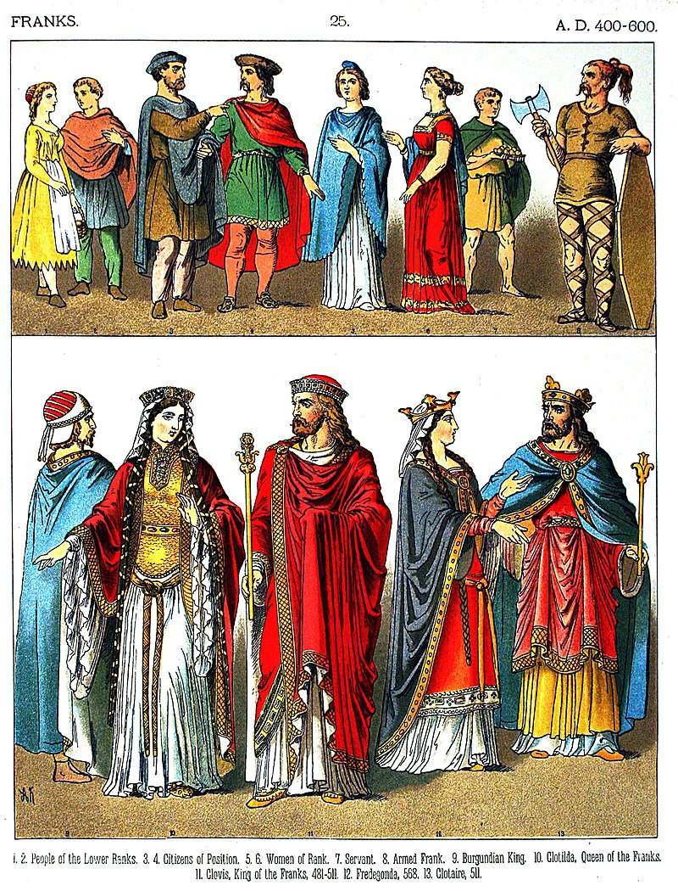
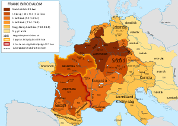
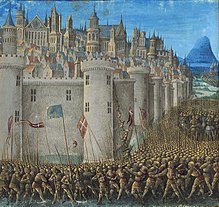
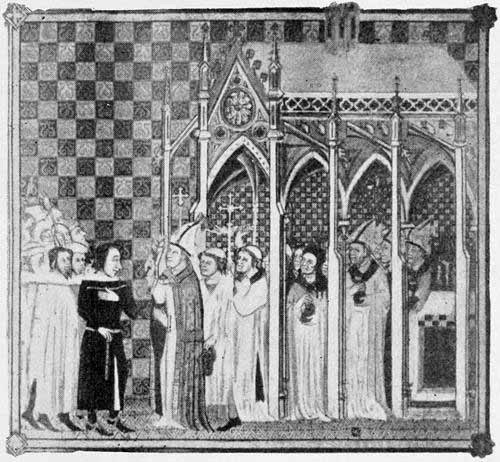
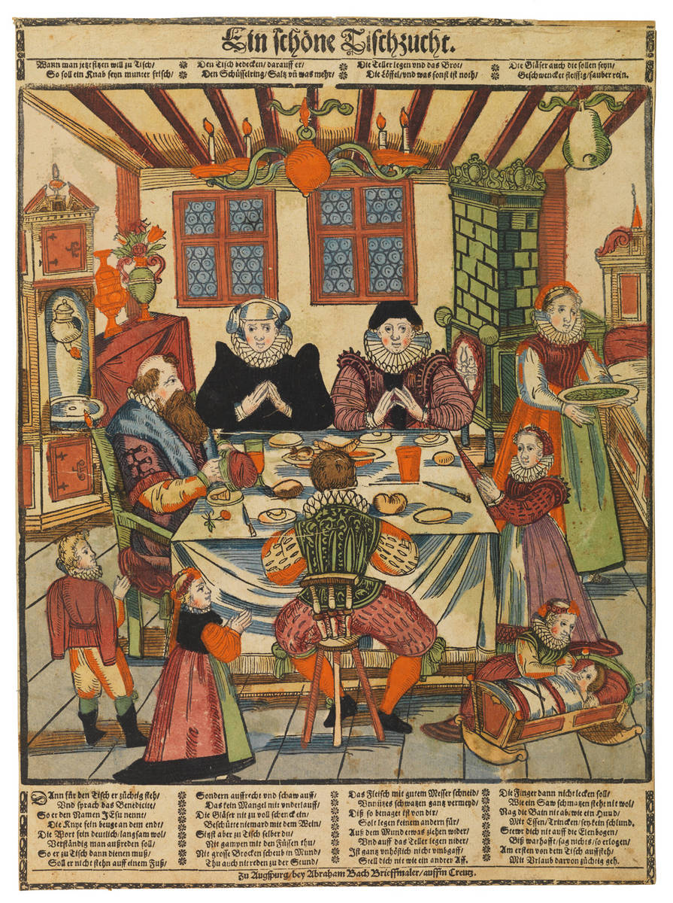

A frankok
A germán eredetű frank törzsek az i. u. 3. században tűntek fel a Rajna jobb partján, és még ebben a században (nyelvük és szokásaik azonosságát megőrizve) két nagyobb ágra, a száliakra és a ripuáriakra váltak szét. A Római Birodalom ekkor támadásaikat (nem minden nehézség nélkül) visszaverte. 356 és 360 között a frank és alemann törzsek rendszeresen betörtek a Rajnán túli római területekre, ekkor Iulianus császár hárította el a támadásaikat.

Nagy Károly
I. Nagy Károly, Martell Károly unokája, Kis Pipin fia, frank király 768-tól. Államát nagy mértékben kiterjesztette, egyesítve Nyugat- és Közép-Európa nagy részét, létrehozva ezzel a Frank Birodalmat. Lombardia királyává koronáztatta magát, majd 800. december 25-én III. Leó pápa a karácsonyi misén Rómában a fejére helyezte a császári koronát, ezzel „római császárrá” (imperator augustus) koronázta őt.

A Frank Birodalom
A Frank Birodalom (482 – 843) az V. században, Gallia északi részén létrejött történelmi állam. A frankok germán törzse Frízia felől, a rómaiak szövetségeseként érkezett a kései Római Birodalomba, és több évszázados államalakulatot hozott létre. Két nagy csoportjuk a száli és a ripuári frankoké. A 9. századra (esetleg még korábban) ez az elkülönítés már értelmét vesztette, de a jogrendszerben jó ideig tovább élt.

A középkor
A középkor az európai történelem hármas történelmi korfelosztásában a középső korszakot jelenti: az ókor után következő, az újkor kezdetéig tartó időszakot.

A parasztság
A jobbágyok nem rendelkeztek se szabadsággal, se semmilyen joggal vagy kiváltsággal, és egyben a harmadik rend legnagyobb részét alkották.

A papság
A papi rendbe nem is lehetett beleszületni, a felvétel a papi rendbe szentségnek számított. Ennek a kiszolgáltatása a püspök jogosultsága volt, azonban feltételekhez nem kötötték. Ez a rendszer lehetővé tette a szimónia virágzását, majd a reneszánsz idején a pápai trónusért küzdő itáliai nemesek időnként még a család gyermek tagjait is pappá szentelték.

A nemesség
A nemesi rend alapvetően örökletes rend volt, amelybe annak tagjai beleszülettek. Nem nemesi származású személy felvételét a nemesi rendbe nemesi oklevél igazolta, amelyet az uralkodó (illetve annak kancelláriája) állított ki. Az oklevél egyik fontos része volt a nemesi címer, aminek használatára ettől fogva jogosult volt a nemes.
A polgárság
A polgárságba bekerülhettek a vagyonosodó városi lakosok és (bevándorlás után) a jobbágyok (coloni) is. Települések városi rangra emelése is hozzájárult a polgári rend bővüléséhez.
